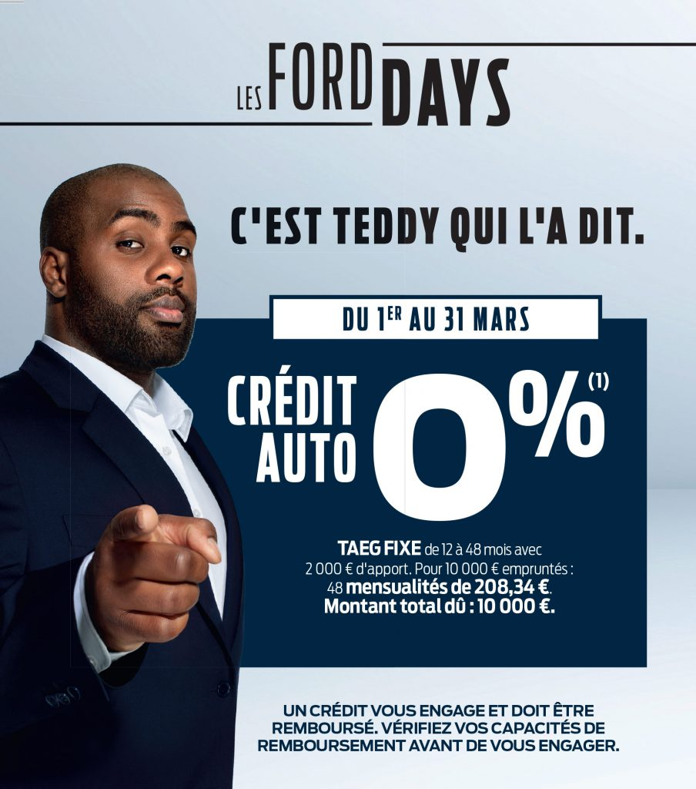
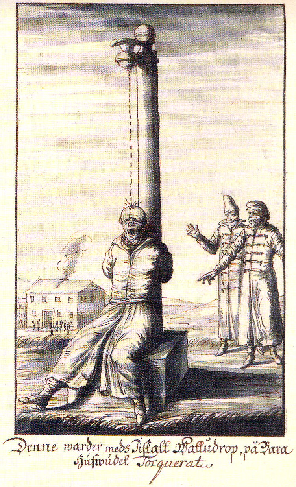

D’où vient le harcèlement ?
Quelques chiffres ?
• En 2024, 5 % des collégiens se disent victimes de harcèlement
– 3 % des écoliers et des lycéens, 6 % en CAP.
– Soit environ un élève par classe.
• Le harcèlement à l’école est stable, mais le cyberharcèlement augmente (OMS, 2022)
• Les filles sont davantage exposées à des formes spécifiques de cyberviolence, à caractère sexiste et sexuel (cybersexisme).
Les différentes formes du harcèlement
A votre avis ?
Les différentes formes du harcèlement
• les intimidations, insultes, moqueries ou menaces en ligne ;
• la propagation de rumeurs ;
• le piratage de comptes et l’usurpation d’identité digitale ;
• la création d’un sujet de discussion, d’un groupe ou d’une page sur un réseau social à l’encontre d’un camarade de classe ;
• la publication d’une photo ou d’une vidéo de la victime en mauvaise posture ;
• le sexting, contraction de « sex » et « texting » défini comme « des images produites par les jeunes (17 ans et moins) qui représentent d’autres jeunes et qui pourraient être utilisées dans le cadre de la pornographie infantile ».
Pourquoi les gens harcèlent ?
A votre avis ?
Pourquoi les gens harcèlent ?
• Le statut social !
– Le harceleur se retrouve au sommet d’un groupe social.
– On remet rarement en cause le harceleur, on préfère rire avec lui (MÊME si on condamne le harcèlement).
Comment les harceleurs choisissent leur victime ?
A votre avis ?
Comment les harceleurs choisissent leur victime ?
• La différence
• Toute personne un peu différente : handicap, obésité, LGBT, croissance précoce, peut être ciblée.
• La personne a peu d’alliés : le harceleur prend peu de risques.
• La personne est isolée : personne ne prend sa défense. Ce n’est jamais de sa faute.
Pourquoi Teddy Riner fait de la pub pour Ford ?

Effet de halo
A votre avis ?
Pourquoi les gens soutiennent les harceleurs ?
• Toujours le statut social !
• Même si vous désapprouvez le harcèlement, vous allez rire avec le harceleur pour profiter un peu de son prestige.
Pourquoi les gens soutiennent les harceleurs ?
Le « problème » du groupe
Le concept de la déindividuation
En groupe (et derrière un écran), on suit davantage les normes du groupe : si le groupe se moque, on se moque.
Conséquences du harcèlement
• Difficulté scolaire
• Absentéisme
• Problème de santé.
• Comportement suicidaire.
• Comportement violent.
• Problème à long terme de sociabilisation.
• Être exclu fait réellement souffrir : le cerveau active des zones liées à la détresse.
• Même une exclusion minime (un jeu en ligne, un SMS sans réponse) fait souffrir.
• De plus, l’isolation ENTRAINE le harcèlement.
Conséquence du harcèlement
Pourquoi les gens ne font rien ?
A votre avis ?
Affaire Wang Yue
L’affaire Kitty Genovese : un mythe ?
L’effet Témoin
• Qu’est-ce que c’est ?
• Plus de personnes sont également témoins, moins nous avons tendance, personnellement, à agir.
• Des exemples ?
• Comment appliquer cela au harcèlement ?
• Mais dans la vraie vie, quelqu’un intervient dans 9 conflits sur 10 : le groupe peut aussi pousser à aider.
Que peut-on faire ?
A votre avis ?
Que peut-on faire ?
• Lutter contre les phénomènes qu’on a vu.
• Ne pas entrer dans le jeu du harceleur, pour qu’il perde son statut social.
• Ne pas subir la conformité de groupe.
• Avoir conscience que si on n’agit pas, peut être que personne ne va agir (effet témoin).
Le harcèlement en ligne
• Qu’est-ce que c’est ?
• les intimidations, insultes, moqueries ou menaces en ligne
• la propagation de rumeurs
• le piratage de comptes et l’usurpation d’identité digitale
• la création d’un sujet de discussion, d’un groupe ou d’une page sur un réseau social à l’encontre d’un camarade de classe
• la publication d’une photo ou d’une vidéo de la victime en mauvaise posture
• le sexting (c’est la contraction de "sex" et "texting". On peut le définir comme "Des images produites par les jeunes
Le harcèlement en ligne
• En Europe, 1 jeune sur 6 (11-15 ans) a été cyberharcelé
• En hausse depuis 2018 : 16 % des filles, 15 % des garçons.
• Les garçons cyberharcèlent davantage (14 % contre 9 %).
• Souvent, la personne harcelée est aussi cyber harcelée.
Supplice de la goutte d’eau

Que peut-on faire ?
• Sur Internet, la loi ne suffit pas.
• Ce qui marche : créer des « safe spaces ».
– Avoir un vrai leadership qui impose des règles très fermes sur le harcèlement et qui exclut dès qu’il y a un souci.
– Avoir conscience que notre action individuelle peut avoir un impact : éviter d’être la goutte d’eau supplémentaire !
Après la séanceAfter the session
Le bilan, les jeux, et votre retourSummary, games, and your feedback
Scannez ce QR code : vous pourrez donner votre retour, revoir le bilan de la formation ou rejouer aux jeux.Scan this QR code: you can leave your feedback, review the session summary, or play the games again.
![QR code vers la page antoninatger.github.io/interventions/retours]() antoninatger.github.io/interventions/retours →antoninatger.github.io/interventions/retours →
antoninatger.github.io/interventions/retours →antoninatger.github.io/interventions/retours →